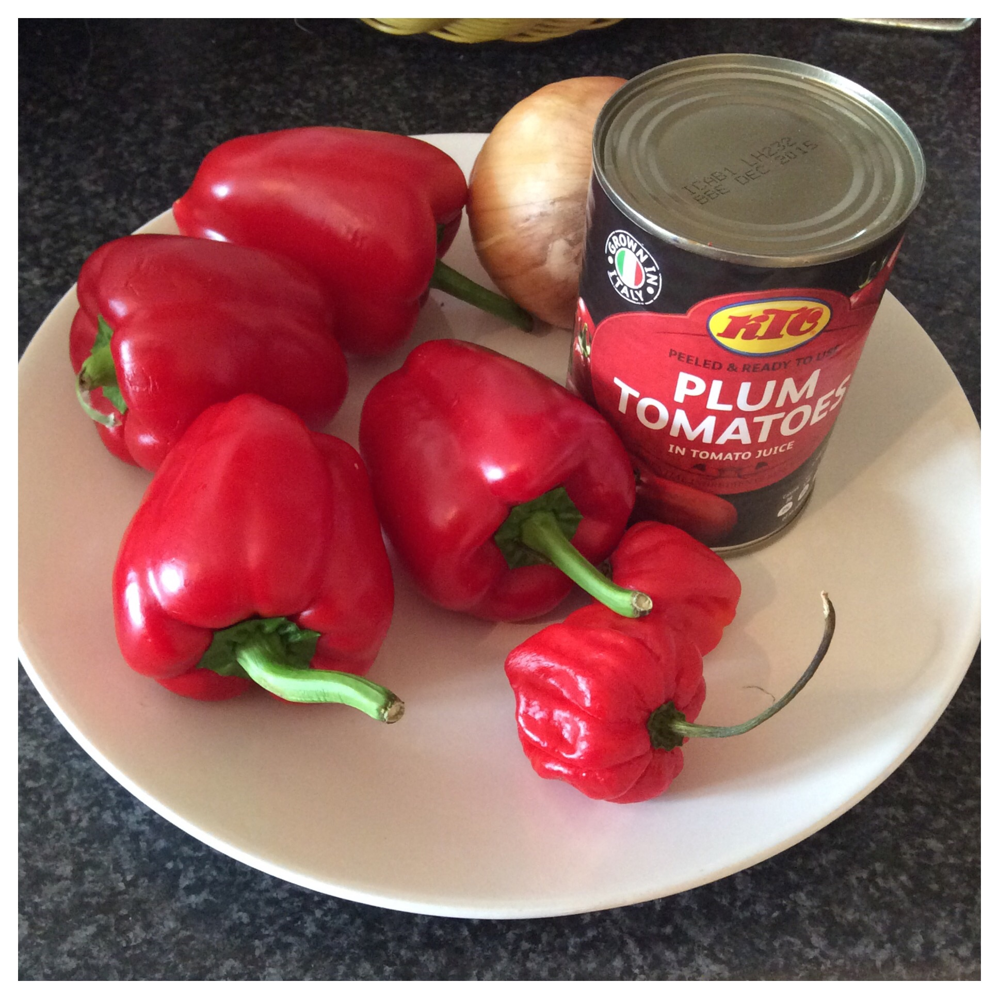

It is a colourful and delicious West African dish made with rice cooked in
rich tomato sauce, spices, and vegetables.
Jollof rice is a staple at parties, weddings, and family gatherings across
Africa, most especially in Nigeria and Ghana.
Recipe Information
Preparation time: 20 minutes
Cooking time: 45 minutes
Servings: 6 minutes
Difficulty: Intermediate
Ingredients
3 cups long-grain parboiled rice
1 large red bell pepper
4 medium tomatoes
2 medium onions (1 blended, 1 sliced)
2 scotch bonnet peppers
1/4 cup vegetable oil
3 tbsp tomato paste
2 cups chicken stock
2 tsp thyme
2 tsp curry powder
2 bay leaves
Salt and seasoning cubes to taste
Instructions
Blend tomatoes, bell pepper, scotch bonnets, and one onion until smooth.
Heat oil in a large pot, add sliced onions and fry until fragrant.
Stir in tomato paste and fry for about 5 minutes.
Add blended mixture, thyme, curry powder, and bay leaves. Cook until the sauce thickens
Add chicken stock, salt, and seasoning cubes, then stir well.
Pour in the rice, reduce heat, cover tightly, and let it cook in the sauce.
Check occasionally and stir from the bottom to prevent burning.
When rice is cooked and fluffy, remove from heat and let it rest for 5 minutes.

Red bell peppers, tomato paste and onions
TIps
For extra smoky flavor, allow the rice to slightly burn at the bottom
this is called the "party jollof" effect and is loved by many!
Delicious Nigerian Jollof Rice with Grilled Chicken and Fried Plantain Garnished with Parsley